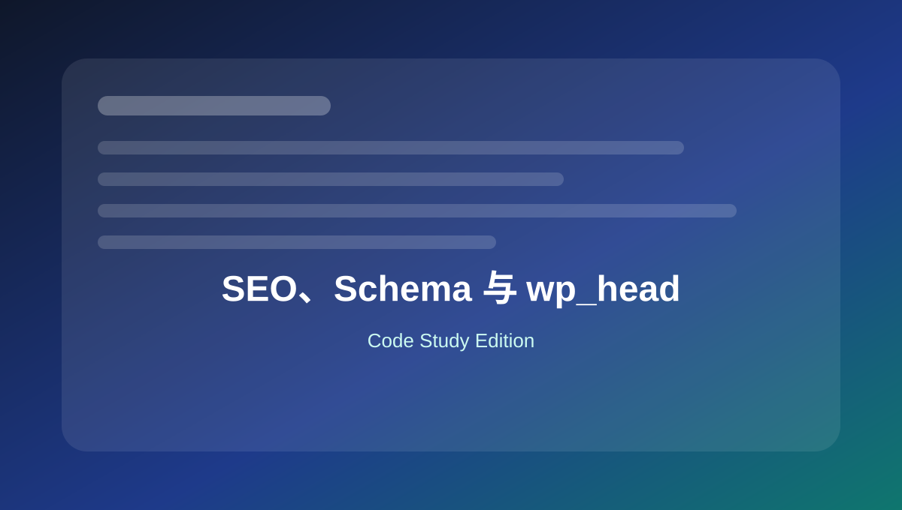

17 SEO、Schema 与 wp_head
整理 meta、canonical、Open Graph、JSON-LD、面包屑和标题过滤场景。

本页关键词
wp_head
meta
schema
JSON-LD
document_title_parts
学习目标
- 会输出基础 meta
- 理解避免和 SEO 插件冲突
- 会输出 JSON-LD
- 会做简单面包屑
- 知道标题过滤方式
代码使用提醒
本页代码适合用于学习和研究。复制到正式网站前，请先备份，并优先在测试环境验证。
涉及用户输入、后台保存、接口请求、删除操作和邮件发送时，要同时考虑权限、nonce、sanitize、validate 和 escape。
1. 页面 meta description
基础
<?php
function mysite_meta_description() {
if ( is_singular() ) {
$desc = get_the_excerpt();
if ( $desc ) {
echo '<meta name="description" content="' . esc_attr( wp_strip_all_tags( $desc ) ) . '">' . "\n";
}
}
}
add_action( 'wp_head', 'mysite_meta_description' );
如果使用 SEO 插件，要避免重复输出。
2. Canonical URL
SEO
<?php
function mysite_canonical_url() {
if ( is_singular() ) {
echo '<link rel="canonical" href="' . esc_url( get_permalink() ) . '">' . "\n";
}
}
add_action( 'wp_head', 'mysite_canonical_url' );
SEO 插件通常会处理 canonical，不要重复。
3. Open Graph 基础信息
SEO
<?php
function mysite_open_graph_tags() {
if ( ! is_singular() ) {
return;
}
echo '<meta property="og:title" content="' . esc_attr( get_the_title() ) . '">' . "\n";
echo '<meta property="og:url" content="' . esc_url( get_permalink() ) . '">' . "\n";
if ( has_post_thumbnail() ) {
echo '<meta property="og:image" content="' . esc_url( get_the_post_thumbnail_url( null, 'large' ) ) . '">' . "\n";
}
}
add_action( 'wp_head', 'mysite_open_graph_tags' );
社交分享信息可用 OG 标签控制。
4. JSON-LD Organization 示例
Schema
<?php
function mysite_organization_schema() {
$data = array(
'@context' => 'https://schema.org',
'@type' => 'Organization',
'name' => get_bloginfo( 'name' ),
'url' => home_url( '/' ),
);
echo '<script type="application/ld+json">' . wp_json_encode( $data, JSON_UNESCAPED_SLASHES | JSON_UNESCAPED_UNICODE ) . '</script>';
}
add_action( 'wp_head', 'mysite_organization_schema' );
JSON-LD 建议用 wp_json_encode 生成。
5. 修改文档标题 parts
SEO
<?php
function mysite_document_title_parts( $title ) {
if ( is_front_page() ) {
$title['tagline'] = 'Premium Outdoor Building Materials';
}
return $title;
}
add_filter( 'document_title_parts', 'mysite_document_title_parts' );
title-tag 主题支持开启后，可以过滤文档标题 parts。
6. 简单面包屑输出
导航
<?php
function mysite_breadcrumbs() {
echo '<nav class="breadcrumbs"><a href="' . esc_url( home_url( '/' ) ) . '">Home</a>';
if ( is_singular() ) {
echo ' / <span>' . esc_html( get_the_title() ) . '</span>';
}
echo '</nav>';
}
复杂项目建议用 SEO 插件或更完整的面包屑逻辑。
本页总结
SEO 代码可以处理 meta、OG、Schema 和标题，但如果已使用 SEO 插件，要避免重复输出和冲突。